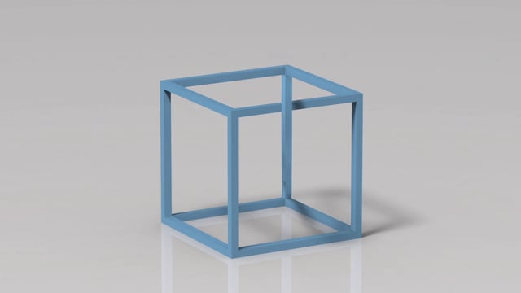

number or late days used:
I discussed the topic of this course with ChatGPT, resulting in the following dialogue:
me: tell me about learning for 3D vision
GhatGPT: 3D vision is the ability to perceive and understand the 3-dimensional structure of the environment. It is an important area of research in computer vision, as it enables machines to understand the spatial relationships between objects and their surroundings. There are several different approaches to learning for 3D vision, including using deep learning techniques such as convolutional neural networks (CNNs) and recurrent neural networks (RNNs) to process 3D data, as well as using traditional computer vision techniques such as stereo matching and structure from motion. Additionally, there are several datasets available for training and evaluating 3D vision models, such as the KITTI dataset and the ShapeNet dataset.
me: what would you do if you could learn for 3D vision
GhatGPT: As an AI model, I do not have the ability to learn or make decisions on my own. However, if I were able to learn for 3D vision, I would do the following:
me: are you sad that you cannot learn on your own for 3D vision?
GhatGPT: As an AI model, I do not have feelings or emotions. I am a machine learning model that can process and generate human-like text based on the input data and the programming that has been done to me. While I am capable of providing information and answering questions on various topics, I do not have the ability to experience emotions or have personal desires or aspirations.
me: I am sad that you cannot learn for 3D vision :(
GhatGPT: I understand that you may have feelings towards AI and the capabilities of AI models like me, but as an AI model, I do not have the ability to feel emotions or to experience sadness. I am designed to process and generate text based on the input data and the programming that has been done to me. My main function is to assist users with providing information and answering questions on a wide range of topics. If there is anything else I can help you with please let me know.
me: :(
GhatGPT: I'm sorry if my response caused any confusion or disappointment. As an AI, I don't have feelings or emotions, but I am here to assist you with any information or question you may have. Is there something specific you would like to know or talk about? I'll do my best to help you with that.
me: it's ok, its not your fault that you can't learn for 3D vision
GhatGPT: Thank you for understanding. It's true that as an AI model, my capabilities and limitations are determined by the programming and data that I was trained on. However, I am constantly updated and improved by the team at OpenAI to be able to provide more accurate and helpful responses. If you have any other questions, feel free to ask.

Here is a picture of a 3D printed Escher Cube, original source here
Not sure if it's the funniest but it is my favorite...original source found here...